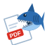
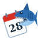

Andy PDF
Úpravy PDF: slučování, otáčení a mazání stránek, oprava textu, podpisy a razítka ze skenu, formuláře, tisk.
Otevřít Andy PDFAndy Kalkulačka
Vědecká kalkulačka s páskou, výpočet DPH a procent, počítání dnů a pracovních dnů, převody jednotek a měn podle ČNB.
Otevřít kalkulačku
Andy Kalendář
Klasický český kalendář se svátky a jmeninami. Měsíc, týden jako diář, celý rok, fond pracovní doby, události, úkoly a tisk.
Otevřít kalendář